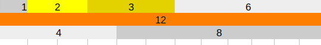
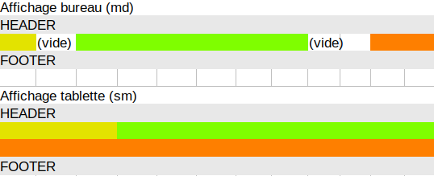
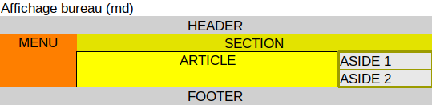

Initialisation : Ajoutez les liens Bootstrap css et js aux endroits prévus (fin du head, début du body). Les énoncés sont dans les div de classe "maConsigne". Les div de classe "borders" contiennent les bloc énoncé+exercice et sont accessibles en cliquant sur les boutons de titre. L'espace où vous devez mettre votre container est dans (ou sur) la balise de classe "votreReponse". En cas de blocage, prenez bien connaissance de tout le code présent sur index.php et des commentaires.
Consigne
Reproduisez le schéma ci-dessus à l'aide des row et des col. L'affichage doit être sur un écran de tablette. Une fois fini, testez d'autres configurations !
Consigne
Reproduisez le schéma ci-dessus en utilisant les offsets, et la combinaison de plusieurs tailles d'écran. Une fois fini, testez d'autres configurations !
Consigne
Reproduisez le schéma ci-dessus en imbriquant les différentes row/col et en utilisant les offsets. Il y a trois niveaux d'imbrication, du plus foncé au plus clair. /!\Dû à l'imbrication, le schéma final ne sera pas à l'échelle (12 colonnes) du schéma demandé.
Consigne
Cet exercice donne une mise en page. Pour ce faire il faut encore utiliser des lignes et des colonnes imbriquées. Le cadre jaune contient trois niveaux d'imbrication, le plus élevé est coloré en gris (plus clair). Une fois fini, imaginez une mise en page pour tablette et/ou pour mobile en ajoutant des col-sm et col-xs !
Consigne
Soient 5 row contenant chacune une col-lg-12, numérotées de 1 à 5. A l'aide des classes d-#-none et d-#-block: